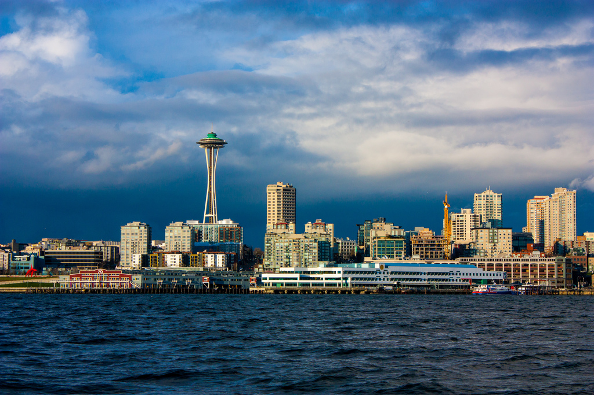
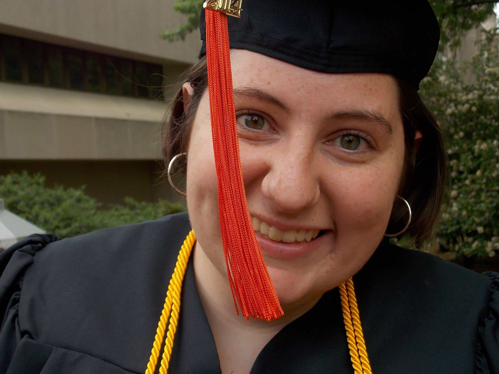

- 


- 

If you’ve ever tried to park your car in downtown Seattle on a game day or you’ve tried to snag the last remaining parking space on the Ave in the U-District or in Capitol Hill on Saturday night, it’s not a secret that trying to find a legal public parking space in Seattle can be a hassle, especially if you’re trying to find one that won’t break the bank. My team identified this problem and set out to prototype a possible solution over the course of a course about the User-Centered Design Process (HCDE 518 at the University of Washington). At the end of the class, we produced a video prototype which we distributed to potential future users and collected their feedback. This was incorporated into a final presentation about our findings and experience.
After identifying the problem space, my group (made up of myself and 3 other students) worked to narrow down the scope of the space so that we knew what we wanted to focus our work on. We came up with the following question:
How can we help people locate available public parking near a preferred location that meets their unique priorities?
With this question we decided, we moved into user research, where we choose 3 different methods: survey, audio diaries, and competitor analysis. Survey was chosen as a good starting point because it allowed us to quickly collect information from a wide variety of users. Our exact survey questions can be seen here.
Once we had information from a wide variety of people, we wanted to get some more in-depth data. We struggled with how to do this; on one hand, we wanted to ride in cars with drivers and have them tell us what they were thinking as they were looking for parking. But this lead a couple of concerns. Could we do this without asking the driver to do too many things at once and put themselves and us at risk? What would happen to the researcher after the participant parked and went about their business; would they be able to get home? We also considered asking participants to keep a journal of their parking experiences over a two week period, but we worried that this activity would be too time consuming and lead to participants not doing it until significantly after parked, which would lose us the context we were looking for. In the end, we ultimately settled on an audio diary. We distributed a phone number which we asked the participants to call and leave a voice mail immediately after they parked. We prompted them with a few open ended questions about their experience to get them started. This was effective, but due to time constraints we could only give the participants 5 days to complete the activity and, we did not get as many responses as we would have liked. Next time I run an activity like this, I will be running it for a minimum of two weeks.
After our research was complete, we distilled the results using an affinity diagram to help us group the results into related themes. This was incredibly helpful for combining our research into a single unit and for getting all team members on the same page. The affinity diagraming also allowed us to create 3 distinct personas, which can be viewed here.
In order to get feedback on the application, we created a survey which we distributed with the video. The feedback was received was overall positive, and we received a few valuable suggestions that we would be able to incorporate into a future iteration of the application.
Our final design was for an iPhone application to help drivers park in legal public parking spaces in Seattle. The app would allow users to create a profile that contained their personal parking preferences, including the maximum price they would pay for a parking space, whether or not they can parallel park, and the size of their car, among others. Then, just before leaving, they would set their destination. The application would guide them using voice navigation to the parking space that most closely matched their preferences. The application would rely on crowdsourcing to determine what parking spaces are unoccupied; when drivers use the application to park, they are asked to quickly report how many open spaces they can see. If the data is unavailable, the application would fall back on historical trends for open spaces in that location to make a best guess at which spaces were unoccupied. For more information, please see the design specification that my team created at the end of the process.
While I was involved in all phases of this project, I was more heavily involved in some parts than others. I was instrumental in creating our first user survey and competitor analysis, which provided a wealth of user information. I also took on the initial creation of the personas, as personas are a particular area of interest to me. I was heavily involved in the storyboarding and filming of the video prototype. Finally, I worked to compile the various pieces of the final design specification and made sure it flowed as a single piece of work.
I also worked as the project manager. This meant that I was responsible for making sure that each deliverable was completed and turned in on time, as well as managing other details necessary for keeping the group on track. This included scheduling regular meetings, providing meeting notes, and other tasks.